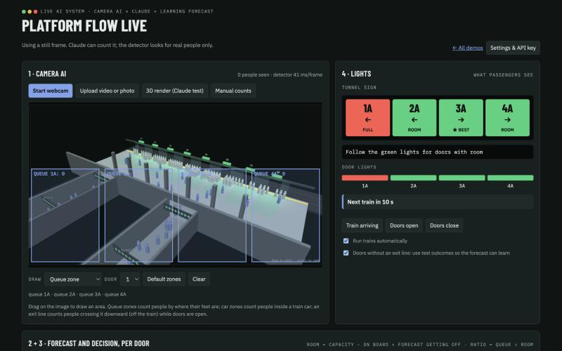
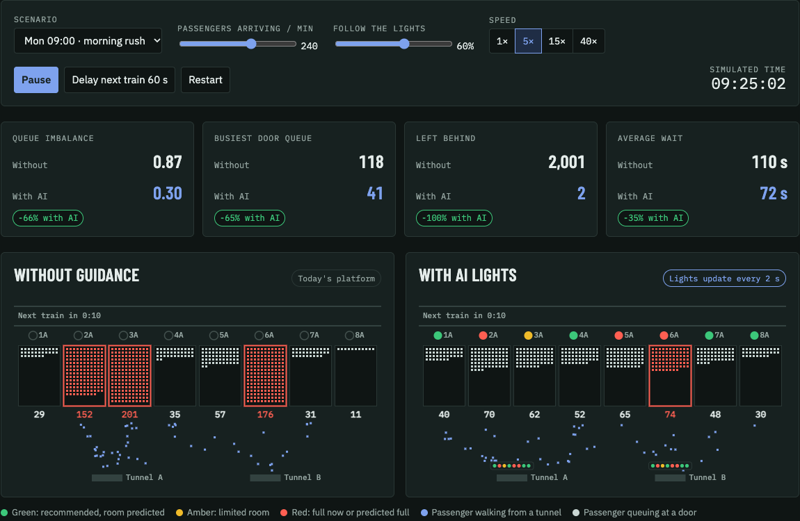
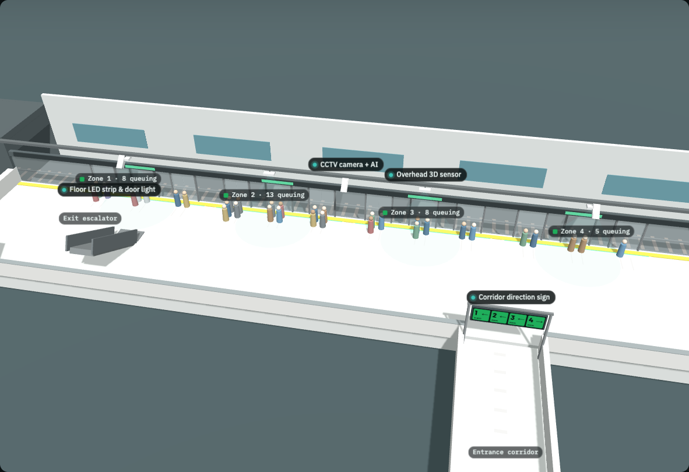

Admiralty Platform Flow
Green, amber and red lights in the access tunnels and above each platform door. An AI model predicts how much room each door will have on the next train and steers passengers there before they pick a queue.

Live AI system
Open the real system →Webcam people-counting, Claude vision and announcements, a learning forecast and live lights.

2D simulator
Open demo →Two identical platforms side by side, with live scores and the AI's per-door forecast.

3D platform
Open demo →Tunnels, door lights, people arriving, queuing and getting off. Toggle the AI on and off.

Hardware in 3D
Open demo →The 4 devices we build: CCTV camera with AI, edge AI unit, corridor sign and door light.

Prototype proof
Open results →120 benchmark runs: −73% queue imbalance and −99.7% people left behind at Monday 09:00.
Source code, benchmark script and results: github.com/Geoeoeo217/MTR-platform-flow